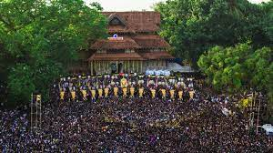

THRISSUR
Thrissur is a city in the south Indian state of Kerala. It's known for sacred sites and colorful festivals. In the center is Vadakkumnathan Temple, dedicated to Lord Shiva and adorned with murals. The ornate, Indo-Gothic Our Lady of Dolours Basilica is nearby. To the north, Thiruvambady Temple is home to several elephants. Sakthan Thampuran Palace houses an archaeology museum with bronze statues and ancient coins

Wadakkunathan Temple
Wadakkunathan Temple is an ancient Hindu temple dedicated to Lord Shiva in city of Thrissur, Kerala State in India. The temple situated in the very centre of town on an eminence commanding a view of neighbouring areas all around. No historian or scholar has been able to ascertain the time when this temple came into existence. Our knowledge of the origin of this temple comes from legends. According to legends the original “Prathishta” was done by Lord Parasurama, an incarnation of Vishnu and it must have been done at least four thousand years ago.
The main deity of the temple is Lord Siva, other idols installed in the temple are those to Sree Parvati, Ganesha, Sankaranarayana and Sree Rama. Parvati, is sanctify in the sanctum of Lord Shiva it self in opposite direction. There are separate sanctum for Krishna, Rishabha, Simhodhara, Dharma sastha Vettakkara, Dharmasastha, Naga Devatas and Adhishankara on the circumambulatory path
ATHIRAPILLY WATERFALLS
Located 60 km from the Thrissur district of Kerala, Athirapally Falls is a marvellous cascade of frothy waters that makes its way from the Anamudi mountains of the Western Ghats. Also called as Bahubali Waterfall, this 80 ft high and 330 ft wide marvel is the largest waterfall in Kerala. It is often referred to as the "Niagara Falls of India". From here, the Athirapally falls flows through the verdant greenery of Vazhachal Forest toward the Arabian Sea, creating a spectacular vista of scintillating water, emerald jungles and azure sky.
When you land in Athirapally, you are greeted with the sight of charming green Sholayar Peaks peering over the rushing gush of the falls. Standing against the backdrop of a rustling jungle foliage, this many films and music videos are shot here. Bird lovers cannot miss this place, for it is the only place in the Western Ghats where four endangered Hornbill species are seen. There is a pool above the falls where you can relax and unwind. To get a view of the waterfall, one needs to get down from the mountain for about 100 meters.
Another interesting fact to note is that the fall joins forces with the Chalakkudy river before reaching its final destination into the sea. There are a couple of water theme parks on the way to Athirappilly called Silver Storm and Dream World and many resorts as well